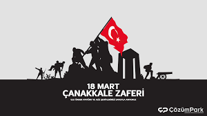
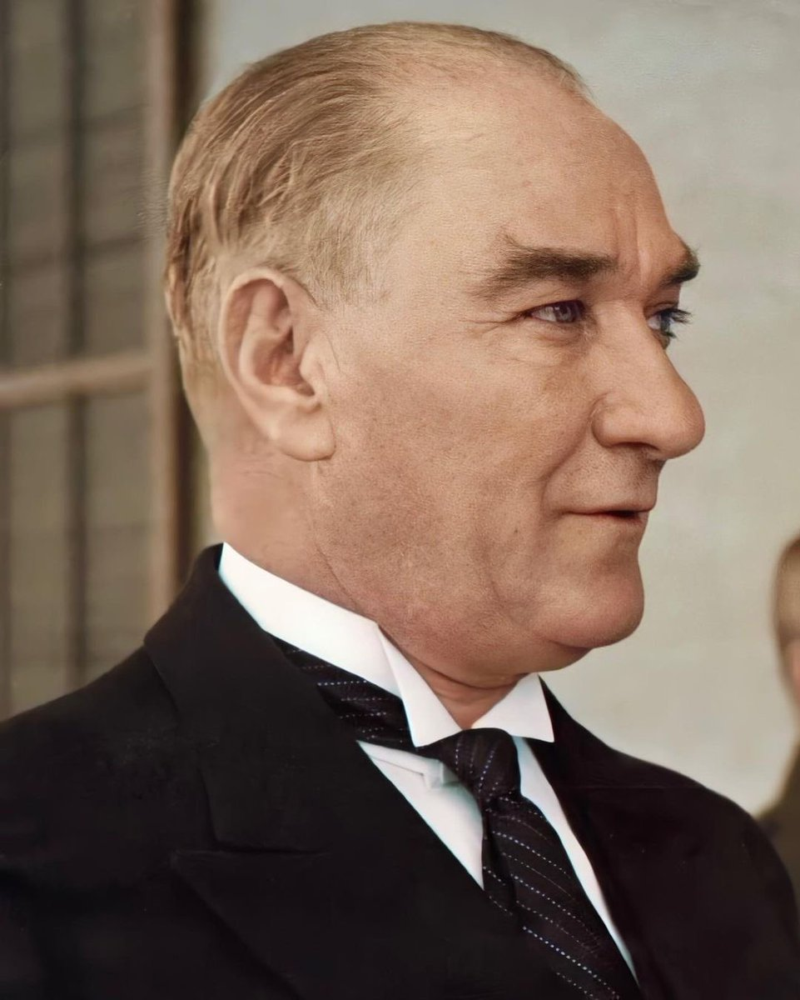

he Turkish War of Independence[note 3] (19 May 1919 – 24 July 1923) was a series of military campaigns waged by the Turkish National Movement after parts of the Ottoman Empire were occupied and partitioned following its defeat in World War I. These campaigns were directed against Greece in the west, Armenia in the east, France in the south, loyalists and separatists in various cities, and British and Ottoman troops around Constantinople (İstanbul).[59] vte Revolutions of 1917–1923 The ethnic demographics of the modern Turkish Republic were significantly impacted by the earlier Armenian genocide and the deportations of Greek-speaking, Orthodox Christian Rum people.[60] The Turkish nationalist movement carried out massacres and deportations to eliminate native Christian populations—a continuation of the Armenian genocide and other ethnic cleansing operations during World War I.[61] Following these campaigns of ethnic cleansing the historic Christian presence in Anatolia was destroyed, in large part, and the Muslim demographic had increased from 80% to 98%.[60] While World War I ended for the Ottoman Empire with the Armistice of Mudros, the Allied Powers continued occupying and seizing land for imperialist designs, as well as to prosecute former members of the Committee of Union and Progress and those involved in the Armenian genocide.[62][63] Ottoman military commanders therefore refused orders from both the Allies and the Ottoman government to surrender and disband their forces. This crisis reached a head when sultan Mehmed VI dispatched Mustafa Kemal Pasha (Atatürk), a well-respected and high-ranking general, to Anatolia to restore order; however, Mustafa Kemal became an enabler and eventually leader of Turkish nationalist resistance against the Ottoman government, Allied powers, and Christian minorities. In an attempt to establish control over the power vacuum in Anatolia, the Allies persuaded Greek Prime Minister Eleftherios Venizelos to launch an expeditionary force into Anatolia and occupy Smyrna (İzmir), beginning the Turkish War of Independence. A nationalist counter government led by Mustafa Kemal was established in Ankara when it became clear the Ottoman government was backing the Allied powers. The Allies soon pressured the Ottoman government in Constantinople into suspending the Constitution, shuttering the Parliament, and signing the Treaty of Sèvres, a treaty unfavorable to Turkish interests that the "Ankara government" declared illegal. In the ensuing war, irregular militia defeated the French forces in the south, and undemobilized units went on to partition Armenia with Bolshevik forces, resulting in the Treaty of Kars (October 1921). The Western Front of the independence war was known as the Greco-Turkish War, in which Greek forces at first encountered unorganized resistance. However İsmet Pasha's organization of militia into a regular army paid off when Ankara forces fought the Greeks in the Battles of First and Second İnönü. The Greek army emerged victorious in the Battle of Kütahya-Eskişehir and decided to drive on the nationalist capital of Ankara, stretching their supply lines. The Turks checked their advance in the Battle of Sakarya and counter-attacked in the Great Offensive, which expelled Greek forces from Anatolia in the span of three weeks. The war effectively ended with the recapture of İzmir and the Chanak Crisis, prompting the signing of another armistice in Mudanya. The Grand National Assembly in Ankara was recognized as the legitimate Turkish government, which signed the Treaty of Lausanne (July 1923), a treaty more favorable to Turkey than the Sèvres Treaty. The Allies evacuated Anatolia and Eastern Thrace, the Ottoman government was overthrown and the monarchy abolished, and the Grand National Assembly of Turkey (which remains Turkey's primary legislative body today) declared the Republic of Turkey on 29 October 1923. With the war, a population exchange between Greece and Turkey,[64] the partitioning of the Ottoman Empire, and the abolition of the sultanate, the Ottoman era came to an end, and with Atatürk's reforms, the Turks created the modern, secular nation-state of Turkey. On 3 March 1924, the Ottoman caliphate was also abolished. Prelude: October 1918 – May 1919 Conclusion of World War I Front page of İkdam on 4 November 1918, after the Three Pashas fled the Ottoman Empire following World War I See also: Committee of Union and Progress and Ottoman Empire in World War I In the summer months of 1918, the leaders of the Central Powers realized that World War I was lost, including the Ottomans'. Almost simultaneously the Palestinian Front and then the Macedonian Front collapsed. The sudden decision by Bulgaria to sign an armistice cut communications from Constantinople (İstanbul) to Vienna and Berlin, and opened the undefended Ottoman capital to Entente attack. With the major fronts crumbling, Grand Vizier Talât Pasha intended to sign an armistice, and resigned on 8 October 1918 so that a new government would receive less harsh armistice terms. The Armistice of Mudros was signed on 30 October 1918, ending World War I for the Ottoman Empire.[65] Three days later, the Committee of Union and Progress (CUP)—which governed the Ottoman Empire as a one-party state since 1913—held its last congress, where it was decided the party would be dissolved. Talât, Enver Pasha, Cemal Pasha, and five other high-ranking members of the CUP escaped the Ottoman Empire on a German torpedo boat later that night, plunging the country into a power vacuum. The armistice was signed because the Ottoman Empire had been defeated in important fronts, but the military was intact and retreated in good order. Unlike other Central Powers, the Allies did not mandate the Ottoman Army to dissolve its general staff. Though the army suffered from mass desertion through out the war which lead to banditry, there was no threat of mutiny or revolutions like in Germany, Austria-Hungary, or Russia. Due to the Turkish nationalist policies pursued by the CUP against Ottoman Christians and the dismemberment of the Arab provinces, by 1918 the Ottoman Empire held control over a mostly homogeneous land of Muslim Turks (and Kurds) from Eastern Thrace to the Persian border, though with sizable Greek and Armenian minorities still within its borders.[66] Armistice of Mudros and prelude to resistance On 30 October 1918, the Armistice of Mudros was signed between the Ottoman Empire and the Allies of World War I, bringing hostilities in the Middle Eastern theatre of World War I to an end. The Ottoman Army was to demobilize, its navy and air force handed to the Allies, and occupied territory in the Caucasus and Persia to be evacuated. Article VII granted the Allies the right to occupy forts controlling the Turkish Straits (to assist the White Russians in their struggle against the Bolsheviks); and the vague right to occupy "in case of disorder" any territory if there were a threat to security, this was to follow through the charges of crimes against humanity orchestrated by the CUP government against Armenian Ottomans.[67][68] For now, the House of Osman escaped the fates of the Hohenzollerns, Habsburgs, and Romanovs to continue ruling their empire, though at the cost of its remaining sovereignty. Mustafa Kemal Pasha in 1918, then an Ottoman army general On 13 November 1918, a French brigade entered Constantinople to begin a de facto occupation of the Ottoman capital and its immediate dependencies. This was followed by a fleet consisting of British, French, Italian and Greek ships deploying soldiers on the ground the next day, totaling 50,000 troops in Constantinople.[69] The Allied Powers stated that the occupation was temporary and its purpose was to protect the monarchy, the Caliphate and the minorities. Somerset Arthur Gough-Calthorpe—the British signatory of the Mudros Armistice—stated the Triple Entente's public position that they had no intention to dismantle the Ottoman government or place it under military occupation by "occupying Constantinople".[70] However, dismantling the government and partitioning the Ottoman Empire among the Allied nations had been an objective of the Entente since the start of WWI.[71] Greek and Armenian refugees were also to be sent back to their homes that they were forced from under the CUP, but most found their old homes inhabited by equally desperate Rumelian Muslim refugees from the Balkan Wars settled in their properties during the First World War. Ethnic conflict restarted in Ottoman land, especially in the Black Sea, Aegean, Eastern Anatolian and Central Anatolian regions; government officials responsible for resettling Christian refugees often assisted Muslim refugees in these disputes, prompting European powers to continue bringing Ottoman territory under their control.[72] A wave of seizures took place in the rest of the country in the following months. Citing Article VII, British forces demanded that Turkish troops evacuate Mosul, claiming that Christian civilians in Mosul and Zakho were killed en masse.[73] On 14 November, joint Franco-Greek troops occupied the town of Uzunköprü in Eastern Thrace as well as the railway axis until the train station of Hadımköy on the outskirts of Constantinople. On 1 December, British troops based in Syria occupied Kilis, Maraş, Urfa and Birecik. Beginning in December, French troops began successive seizures of Ottoman territory in Cilicia, including the towns of Antakya, Mersin, Tarsus, Ceyhan, Adana, Osmaniye, and İslâhiye[74] while French forces embarked by gunboats and sent troops to the Black Sea ports of Zonguldak and Karadeniz Ereğli commanding Turkey's coal mining region. These continued seizures of land prompted Ottoman commanders to refuse demobilization and prepare for renewed conflict. The British similarly asked Mustafa Kemal Pasha to turn over the port of Alexandretta (İskenderun), which he reluctantly did, following which he was recalled to Constantinople. He made sure to distribute weapons to the population to prevent them from falling into the hands of Allied forces. Some of these weapons were smuggled to the east by members of Karakol, a successor to the Special Organization, to be used in case resistance was necessary in Anatolia. Many Ottoman officials participated in efforts to conceal from the occupying authorities details of the burgeoning independence movement spreading throughout Anatolia.[75] Other commanders began refusing orders from the Ottoman government and the Allied powers. After Mustafa Kemal Pasha returned to Constantinople, Ali Fuat Pasha (Cebesoy) brought XX Corps under his command.[76] He marched first to Konya and then to Ankara to organise resistance groups, such as the Circassian çetes he assembled with guerilla leader Çerkes Ethem. Meanwhile, Kazım Karabekir Pasha refused to surrender his intact and powerful XV Corps in Erzurum.[77]
18th March Çanakkale Victory and Martyrs' Day is a national day of remembrance in Turkey. 18 March is known in Turkey as Canakkale Victory and Martyr’s Day. It’s an important day, and this year of Turkey’s defeat of Allied battleships who tried to take control of the Dardanelles, shelling Turkish forts along both the Asian and European shores of the Dardanelles in Çanakkale. During this attack, the town of Çanakkale, particularly its Greek quarter suffered extensive damage. This day was a critical turning point in the nation building process of Turkey and every year we stop to remember the incredible courage and commitment of those soldiers who fought for Turkey’s freedom.
Mustafa Kemal Atatürk (Turkish pronunciation: [mustafa kemal atatyɾk]) (1881 – 10 November 1938) founded the Republic of Turkey, and served as its president from 1923 until his death on 10 November 1938. His personal life has been the subject of numerous studies. According to Turkish historian Kemal H. Karpat, Atatürk's recent bibliography included 7,010 different sources.[1] Atatürk's personal life has its controversies, ranging from where he was born to his correct full name. The details of his marriage have always been a subject of debate. His religious beliefs were discussed in Turkish political life as recently as the Republic Protests during the 2007 presidential election. Mustafa Kemal's personality has been an important subject both for scholars and the general public.[1] Much of substantial personal information about him comes from memoirs by his associates, who were at times his rivals, and friends. Some credible information originates from Ali Fuat Cebesoy, Kâzım Karabekir, Halide Edib Adıvar, Kılıç Ali, Falih Rıfkı Atay, Afet İnan, there is also secondary analysis by Patrick Balfour, the 3rd Baron Kinross, Andrew Mango and, most recently, Vamık D. Volkan and Norman Itzkowitz Mustafa Kemal Atatürk (Turkish pronunciation: [mustafa kemal atatyɾk]) (1881 – 10 November 1938) founded the Republic of Turkey, and served as its president from 1923 until his death on 10 November 1938. His personal life has been the subject of numerous studies. According to Turkish historian Kemal H. Karpat, Atatürk's recent bibliography included 7,010 different sources.[1] Atatürk's personal life has its controversies, ranging from where he was born to his correct full name. The details of his marriage have always been a subject of debate. His religious beliefs were discussed in Turkish political life as recently as the Republic Protests during the 2007 presidential election. Mustafa Kemal's personality has been an important subject both for scholars and the general public.[1] Much of substantial personal information about him comes from memoirs by his associates, who were at times his rivals, and friends. Some credible information originates from Ali Fuat Cebesoy, Kâzım Karabekir, Halide Edib Adıvar, Kılıç Ali, Falih Rıfkı Atay, Afet İnan, there is also secondary analysis by Patrick Balfour, the 3rd Baron Kinross, Andrew Mango and, most recently, Vamık D. Volkan and Norman Itzkowitz Mustafa Kemal Atatürk (Turkish pronunciation: [mustafa kemal atatyɾk]) (1881 – 10 November 1938) founded the Republic of Turkey, and served as its president from 1923 until his death on 10 November 1938. His personal life has been the subject of numerous studies. According to Turkish historian Kemal H. Karpat, Atatürk's recent bibliography included 7,010 different sources.[1] Atatürk's personal life has its controversies, ranging from where he was born to his correct full name. The details of his marriage have always been a subject of debate. His religious beliefs were discussed in Turkish political life as recently as the Republic Protests during the 2007 presidential election. Mustafa Kemal's personality has been an important subject both for scholars and the general public.[1] Much of substantial personal information about him comes from memoirs by his associates, who were at times his rivals, and friends. Some credible information originates from Ali Fuat Cebesoy, Kâzım Karabekir, Halide Edib Adıvar, Kılıç Ali, Falih Rıfkı Atay, Afet İnan, there is also secondary analysis by Patrick Balfour, the 3rd Baron Kinross, Andrew Mango and, most recently, Vamık D. Volkan and Norman Itzkowitz Mustafa Kemal Atatürk (Turkish pronunciation: [mustafa kemal atatyɾk]) (1881 – 10 November 1938) founded the Republic of Turkey, and served as its president from 1923 until his death on 10 November 1938. His personal life has been the subject of numerous studies. According to Turkish historian Kemal H. Karpat, Atatürk's recent bibliography included 7,010 different sources.[1] Atatürk's personal life has its controversies, ranging from where he was born to his correct full name. The details of his marriage have always been a subject of debate. His religious beliefs were discussed in Turkish political life as recently as the Republic Protests during the 2007 presidential election. Mustafa Kemal's personality has been an important subject both for scholars and the general public.[1] Much of substantial personal information about him comes from memoirs by his associates, who were at times his rivals, and friends. Some credible information originates from Ali Fuat Cebesoy, Kâzım Karabekir, Halide Edib Adıvar, Kılıç Ali, Falih Rıfkı Atay, Afet İnan, there is also secondary analysis by Patrick Balfour, the 3rd Baron Kinross, Andrew Mango and, most recently, Vamık D. Volkan and Norman Itzkowitz